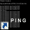

...

ეს არის devcpp-ის მინიმალური პროექტი რომელიც შეიცავს ყველანაერ ბილიოთეკებს და არ საჭიროებს devcpp-ში FreeGlut-ის დაყენებას
ეს არის vs.net 2005-ის მინიმალური პროექტი რომელიც შეიცავს ყველანაერ ბილიოთეკებს
www.geogamedev.net
- ახალი საიტი გეიმ-დეველოფინგზე ! ასევე უკვე გამოქვეყნებულია რამოდენიმე სტატია OpenGL-ზე !
Do you really want to reboot ?